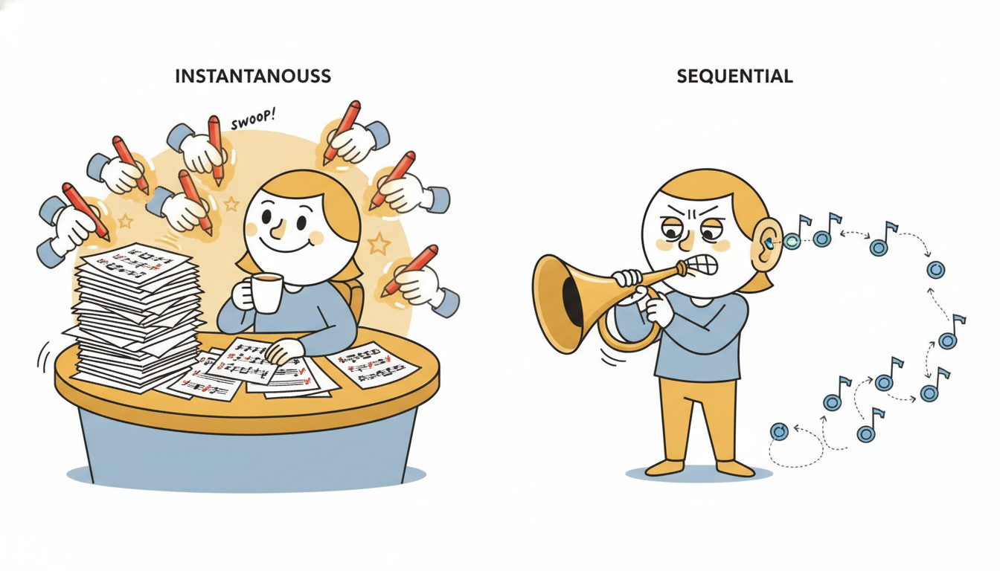

"I was trained in a single glorious parallel instant, every sample of every recording graded at once. Then they asked me to speak, and I discovered the cruel asymmetry of my existence: I must emit one sample, feed it back to myself, emit the next, feed it back again, sixteen thousand times for a single second of sound. Generation, it turns out, is where my parallel youth comes to pay its sequential debt."
A WaveNet Generating One Sample at a Time
WaveNet (van den Oord et al., 2016) is the architecture that proved a stack of dilated causal convolutions could model raw waveforms sample by sample and beat the best parametric speech synthesizers of its day. It is built from three ideas this chapter has assembled: the causal convolution of Section 11.2 that forbids any peek at the future, the exponentially dilated stack of Section 11.3 that buys a receptive field of thousands of steps with a handful of layers, and a gated activation unit, $\tanh \odot \sigma$, borrowed from the gating logic of the LSTM, that lets each layer learn what to pass and what to suppress. Wrap every gated dilated layer in a residual connection so gradients reach the bottom of a very deep stack, route a skip connection from every layer to a shared output head, and you have the full network. WaveNet is autoregressive: it factorizes the joint distribution of a sequence into a product of one-step conditionals, $p(\mathbf{x}) = \prod_t p(x_t \mid x_{
In Section 11.2 we made convolution causal: an output at time $t$ may depend only on inputs at times $\le t$, the structural honesty that lets a convolutional model forecast without leaking the future. In Section 11.3 we made it efficient over long ranges: stacking dilated convolutions with dilation doubling each layer, $1, 2, 4, 8, \dots$, grows the receptive field exponentially in depth while the parameter count grows only linearly, so a few tens of layers see thousands of steps. WaveNet is what you get when you take those two pieces seriously, add the minimum machinery needed to train a stack that deep and to turn its outputs into a probability distribution, and point the result at raw audio. This section assembles the complete model and then, in the worked example, builds and runs it. We use the unified notation of Appendix A: $x_t$ the value at step $t$, $x_{ The reason WaveNet earns a section of its own, rather than a footnote to the dilated-convolution section that precedes it, is that it is the first place in this book where a convolutional sequence model becomes a full generative model of a sequence. Causality and dilation are mechanism; the autoregressive factorization and the gated, residual, skip-connected stack are what turn that mechanism into something that can both score the likelihood of a waveform and synthesize a new one. And the train-parallel, generate-sequential asymmetry that falls out of the autoregressive choice is not a quirk of audio: it is the central efficiency story of modern generative sequence modeling, the same story that governs autoregressive Transformers in Chapter 12 and the deep forecasters of Chapter 14. Understanding it here, in the simplest architecture that exhibits it cleanly, pays off across the rest of Part III. The four competencies this section installs are these: to write the WaveNet architecture in full, the gated activation unit with its tanh and sigmoid branches, the residual path, and the aggregated skip path, and to see how each piece earns its place; to explain why autoregressive generation is inherently sequential and $O(T)$ in network evaluations while training is a single parallel forward pass, and what quantization and the categorical or mixture output have to do with it; to carry the WaveNet template from audio to probabilistic forecasting, conditioning on covariates and emitting a predictive distribution; and to implement a gated residual block and a small dilated stack from scratch, train it on a 1D signal, and autoregressively roll out a continuation, verifying that the stack's receptive field covers the context the task needs. WaveNet is a stack of identical residual blocks, each containing one dilated causal convolution feeding a gated activation unit, with a residual connection around the block and a skip connection out of it. The whole stack sits between an input projection and an output head built from the summed skip connections. We take the three pieces in turn, then assemble them. The first piece is the gated activation unit, the nonlinearity that replaces a plain ReLU or tanh inside each block. Let $\mathbf{z}$ be the output of the dilated causal convolution at a layer, split (along channels) into two halves, a filter half and a gate half, each produced by its own convolution weights. The gated unit is where $*$ denotes the dilated causal convolution, $\mathbf{W}_f$ and $\mathbf{W}_g$ are the filter and gate convolution weights, $\sigma$ is the logistic sigmoid, and $\odot$ is the elementwise (Hadamard) product. The $\tanh$ branch proposes a candidate value in $[-1, 1]$; the $\sigma$ branch produces a soft mask in $[0, 1]$ that decides, channel by channel and step by step, how much of that candidate to let through. This is exactly the multiplicative gating that the LSTM of Chapter 10 uses to control its cell state, transplanted into a convolutional layer, and van den Oord et al. found empirically that it modeled audio markedly better than a non-gated activation. The gate is what gives a feedforward convolutional stack some of the input-dependent selectivity that recurrence achieves through state. The second piece is the residual connection. The gated output $\mathbf{h}$ is passed through a $1\times 1$ convolution (a per-step linear mixing of channels) and added back to the block's input, so the block computes $\mathbf{x} + \text{Conv}_{1\times1}(\mathbf{h})$ and the next block receives that sum. As in any residual network, this gives the gradient a short path from the loss to every layer, which is what makes a stack of thirty or more dilated layers trainable at all; without it the deep stack would suffer the same gradient decay that plagues the deep unrolled RNN of Section 9.4. The third piece is the skip connection: the gated output $\mathbf{h}$ is also passed through a separate $1\times 1$ convolution and routed directly to the output head, bypassing all the blocks above it. The output head sums the skip contributions from every block, applies a ReLU, a $1\times 1$ convolution, another ReLU, a final $1\times 1$ convolution, and a softmax, producing the predicted distribution over the next sample. Summing skips means the output sees features at every dilation scale at once, fine detail from the shallow, short-dilation layers and coarse structure from the deep, long-dilation layers. Figure 11.4.1 draws one residual block with its gated unit, residual path, and skip path. Assembling the three pieces gives the complete model. An input projection lifts the (quantized) input to the residual channel width. Then come the residual blocks, grouped into a few repeated "stacks" in which the dilation resets and re-doubles, for example $1, 2, 4, \dots, 512$ repeated three or four times, so that the receptive field grows while the dilations stay small enough to remain well-conditioned. Each block contributes a skip; the head sums the skips and emits the categorical distribution over the next sample. The receptive field of a stack with dilations doubling from $1$ to $2^{L-1}$, repeated $R$ times with filter width $2$, is $R \cdot (2^{L} - 1) + 1$ steps, the exponential-in-depth growth that Section 11.3 established and that subsection four verifies in code. Every component earns its place: dilation for reach, gating for selectivity, residual for trainable depth, skip for multi-scale output. WaveNet is best remembered not as a monolith but as the clean composition of four independent design choices, each fixing one specific problem. Causal convolution forbids future leakage (correctness). Exponential dilation buys a long receptive field cheaply (reach). The gated unit $\tanh \odot \sigma$ gives input-dependent selectivity a plain activation lacks (expressivity). Residual plus skip connections make a very deep stack trainable and let the output read every scale at once (optimization and multi-scale fusion). Swap any one out and you get a recognizable variant: drop the gate for a ReLU and you have a generic TCN; drop the autoregressive output for a regression head and you have the forecasting TCN of Section 11.3. Holding the four ideas separate is what lets you transplant them, one at a time, into the architectures that follow.  WaveNet is an autoregressive model: it factorizes the joint distribution of the whole sequence into an ordered product of one-step conditionals,1. The WaveNet Architecture in Full Intermediate
2. Autoregressive Generation: Parallel Training, Sequential Synthesis Intermediate
Training is fully parallel. During training the entire ground-truth sequence is known, so the network is fed the true $x_{ Generation is strictly sequential. At synthesis time there is no ground-truth future to feed; the model must produce its own. So it samples $x_1 \sim p(x_1)$, appends it to the history, runs the network to get $p(x_2 \mid x_1)$, samples $x_2$, appends, runs again for $p(x_3 \mid x_{<3})$, and so on. Each new sample requires a fresh network evaluation that conditions on all previously generated samples, and the samples cannot be produced out of order because each depends on its predecessors. Generating a sequence of length $T$ therefore costs $T$ sequential network evaluations, an $O(T)$ chain that cannot be parallelized over time. For raw audio at 16 kHz this means sixteen thousand forward passes per second of output, which is why the original WaveNet, magnificent in quality, was famously slow to sample from. Take WaveNet at the standard 16 kHz audio rate, so one second of sound is $T = 16{,}000$ samples. Training on a one-second clip is a single parallel forward pass: the convolutional stack scores all $16{,}000$ conditionals at once, so the time cost is one network evaluation (call it one unit). Generation of the same one second is $16{,}000$ sequential network evaluations, because sample $x_t$ cannot be computed until $x_{t-1}$ has been sampled and fed back. The ratio is stark: generation costs $16{,}000\times$ the per-evaluation work of training for the same length, and the evaluations cannot overlap in time. If a single forward pass on the relevant hardware takes even one millisecond, naive generation of one second of audio takes sixteen seconds of wall-clock, a $16\times$ slower-than-real-time synthesizer. This single ratio, $1$ parallel pass to $T$ sequential passes, is the entire motivation for the fast-generation research of this subsection's frontier callout, and it is the same arithmetic that makes autoregressive Transformer decoding the bottleneck in Chapter 12. The output distribution and quantization are the other half of the generation story. Raw 16-bit audio takes $65{,}536$ possible values per sample, far too many for a softmax. WaveNet quantizes to 256 levels using a $\mu$-law companding transform, which compresses the dynamic range logarithmically (matching human loudness perception) so that 256 levels reproduce audio that sounds far better than 256 levels of linear quantization would. The network then emits a 256-way categorical distribution over the next quantized level, trained with cross-entropy. Modeling the conditional as a flexible categorical, rather than, say, a single Gaussian, is deliberate: the true distribution of the next audio sample is often multimodal and skewed, and a categorical makes no parametric assumption about its shape. Later variants (and the forecasting descendants of subsection three) replace the 256-way categorical with a mixture output, a mixture of logistics or Gaussians, which keeps the multimodal flexibility while handling continuous values without a hard quantization grid. The choice of output distribution is a modeling knob independent of the convolutional body: categorical for discretized values, mixture or parametric for continuous ones. The one fact to carry from this subsection: an autoregressive model trains in parallel and generates in sequence, and this is a property of the factorization, not of WaveNet specifically. Teacher forcing during training feeds the true history everywhere at once, so a causal convolution scores all $T$ conditionals in one pass. Generation has no true future to feed, so it must sample, feed back, and re-evaluate, $T$ times, strictly in order. Every autoregressive sequence model pays this tax: WaveNet here, the GPT-style decoder of Chapter 12, the autoregressive forecasters of Chapter 14. The architectures differ; the parallel-train, sequential-generate asymmetry is the same, and so are the tricks for cheapening generation, caching, parallelizing across the batch rather than over time, or distilling the autoregressive model into a one-shot generator. Nothing in the WaveNet body is specific to audio. A dilated causal convolutional stack with a probabilistic output head is a general autoregressive model of any real-valued sequence, and the time-series community adopted it quickly as a forecaster. The translation requires three small changes, each replacing an audio-specific choice with a forecasting-appropriate one. The three swaps, audio choice to forecasting choice, are these: First, the output distribution changes from a 256-way $\mu$-law categorical to something suited to the target. For a continuous series one emits the parameters of a parametric predictive distribution, a Gaussian $\mathcal{N}(\mu_t, \sigma_t^2)$ for a real value, a Student-$t$ for heavy tails, a negative binomial for count data such as retail demand, or a mixture for multimodal targets, and trains by maximizing the predictive log-likelihood. This is precisely the design of DeepAR (Salinas et al., 2020), the autoregressive RNN forecaster whose convolutional cousin is a WaveNet body with a parametric head; both produce a full predictive distribution, not a point forecast, and both sample multi-step futures by the same autoregressive roll-out of subsection two. The probabilistic-forecasting machinery, scoring rules, predictive intervals, calibration, is developed in Chapter 19, and the deep forecasting architectures that build directly on this WaveNet-as-forecaster template, including DeepAR and its descendants, are the subject of Chapter 14. Second, real forecasting problems come with covariates, and WaveNet conditions on them cleanly. The gated activation unit accepts an additive conditioning term in both branches: where $\mathbf{c}$ is the conditioning input and $\mathbf{V}_f, \mathbf{V}_g$ project it into the filter and gate. A global conditioner (an item identity, a store id, a learned series embedding) is broadcast across all timesteps; a local conditioner (known-future covariates such as day-of-week, holiday flags, promotions, weather forecasts) is time-varying and supplied per step, often upsampled to the sample rate. This is exactly how the original WaveNet conditioned on speaker identity and on linguistic features for text-to-speech, and it is how a forecaster injects the calendar and known-future regressors that drive demand. Third, the quantization step is usually dropped for continuous series in favor of the parametric or mixture head, since there is no perceptual reason to compand a temperature or a demand series the way there is for audio. Who: A demand-planning team at a large online retailer forecasting daily unit sales for tens of thousands of products, the kind of count-valued, intermittent, covariate-rich problem that Chapter 14 studies in depth. Situation: Each product had a few years of daily sales plus known-future covariates (price, promotion calendar, holidays, day-of-week), and the business needed not a point forecast but a predictive distribution, so safety stock could be set from a quantile rather than a guess. Problem: Classical per-series models (the ARIMA and exponential-smoothing of Chapter 5) could not share statistical strength across the catalog and produced poor intervals for the many slow-moving, intermittent items. Dilemma: Fit tens of thousands of independent classical models (cheap, no cross-learning, weak on sparse items) or train one global deep autoregressive model across the whole catalog (shares strength, handles covariates and counts, but pays the autoregressive generation tax of subsection two at inference). Decision: They trained a single WaveNet-style dilated causal stack across all series, with a global learned per-product embedding as a global conditioner, the known-future covariates as a local conditioner, and a negative-binomial output head for the count-valued, over-dispersed sales. How: Training was the parallel teacher-forced pass of subsection two over all series and all dates at once; forecasting drew the multi-step predictive distribution by autoregressive roll-out, sampling many trajectories per product to read off quantiles for safety-stock policy. Result: The global model sharply improved interval calibration on intermittent items by borrowing seasonality and promotion response across the catalog, and the negative-binomial head gave honest count-valued uncertainty that a Gaussian would have mismodeled; the per-product autoregressive roll-out was the cost, amortized by batching all products through each sequential step together. Lesson: A WaveNet body plus a domain-appropriate probabilistic head plus covariate conditioning is a complete recipe for global probabilistic forecasting; the architecture from audio transfers almost unchanged, and the only real cost imported with it is the sequential generation of subsection two, which batching across series, not across time, largely hides. There is something quietly delightful in the fact that the identical stack of dilated causal convolutions, with nothing changed but the head and the conditioner, can synthesize a human voice for a phone assistant and forecast how many phone cases a warehouse will ship next Tuesday. The audio people heard a waveform; the forecasting people saw a time series; the network only ever saw $p(x_t \mid x_{ We now build the architecture and run it. The plan: implement a WaveNet gated residual block from scratch in PyTorch, stack a few of them with doubling dilation, train the stack on a synthetic 1D signal by teacher-forced one-step prediction, then autoregressively generate a continuation, and finally verify in code that the stack's receptive field covers the periodic structure the signal needs. We keep the target continuous and use a Gaussian (here, mean-squared-error) head for clarity, the continuous-output choice of subsection three; the categorical version differs only in the head. Code 11.4.1 is the from-scratch gated residual block, the heart of WaveNet. With the architecture in hand, Code 11.4.2 makes a 1D signal, trains the stack by teacher-forced one-step prediction, and reports the receptive field against the signal's period. The signal is a sum of two sinusoids whose longest period sets the context the model must see; we will check the receptive field covers it. The receptive-field arithmetic is the load-bearing check: $64 > 40$, so every prediction conditions on more than one full period of the signal's slowest component, which is the convolutional analogue of "the context window covers the dependency" from the truncation discussion of Section 9.3. Now the payoff: Code 11.4.3 autoregressively generates a continuation, feeding each prediction back as the next input, exactly the sequential roll-out of subsection two. Read the three blocks together: Code 11.4.1 built the gated residual block and stack of subsection one; Code 11.4.2 trained it in a single parallel teacher-forced pass and confirmed the receptive field covers the signal's period; Code 11.4.3 generated a continuation by the strictly sequential roll-out of subsection two, paying one pass per output step. The architecture, the training-generation asymmetry, and the receptive-field guarantee are all visible in roughly seventy lines. The from-scratch block, stack, training loop, and roll-out of Code 11.4.1 through 11.4.3 ran roughly 80 lines of careful causal-padding and skip-aggregation bookkeeping. A modern forecasting library collapses the whole thing to a few lines: PyTorch Forecasting and Darts ship production WaveNet-style and TCN forecasters that handle the causal dilated stack, the probabilistic head, the covariate conditioning of subsection three, and the autoregressive multi-step roll-out internally, behind a The line-count reduction is the lesson: from roughly 80 lines of architecture and roll-out machinery down to about five, with the receptive-field arithmetic, the strict causality, the skip aggregation, and the autoregressive generation all handled internally. You write from scratch once, to understand the four ideas of subsection one and the asymmetry of subsection two; you reach for the library every time after. The sequential $O(T)$ generation of subsection two has driven a decade of research, and the 2024 to 2026 frontier is where it pays off. The audio lineage moved past autoregression entirely: Parallel WaveNet (van den Oord et al., 2018) distilled the slow autoregressive teacher into a parallel inverse-autoregressive-flow student that generates a whole waveform in one shot, and the diffusion vocoders that now dominate neural audio (DiffWave, and the consistency-distilled and flow-matching vocoders of 2024 to 2025) generate in a few parallel denoising steps rather than thousands of sequential ones. On the forecasting side, the WaveNet-as-forecaster template of subsection three lives on inside the temporal foundation models of Chapter 15: the dilated-causal and patch-based backbones of TimesFM (Google, 2024) and the autoregressive Chronos and Lag-Llama models tokenize and forecast series with exactly the parallel-train, sequential-generate structure analyzed here, and 2024 to 2025 work on parallel and speculative decoding (importing the speculative-decoding trick from large language models) attacks their generation cost directly. The structural-state-space models of Chapter 13, Mamba and its kin, offer a third escape: a linear recurrence that trains by parallel scan like a convolution yet generates with a constant-size recurrent state, getting WaveNet's parallel training and an RNN's cheap step-by-step generation at once. The 2026 takeaway: the gated dilated causal stack is a foundational template, but "generate without paying the autoregressive tax" is the live research that keeps reshaping how it is deployed. These exercises move from reasoning about the architecture, through implementation, to an open design question. Solutions to selected exercises appear in Appendix G.3. From Audio to Time Series: WaveNet as a Probabilistic Forecaster Advanced
4. Worked Example: A Gated Dilated Stack, Trained and Autoregressively Sampled Advanced
import torch
import torch.nn as nn
import torch.nn.functional as F
class GatedResidualBlock(nn.Module):
"""One WaveNet block: dilated CAUSAL conv -> gated unit (tanh * sigmoid)
-> residual out (back into the stack) and skip out (to the shared head)."""
def __init__(self, channels, dilation, kernel_size=2):
super().__init__()
self.dilation = dilation
self.kernel_size = kernel_size
# one conv produces BOTH gate branches: 2*channels output, split in half.
self.conv = nn.Conv1d(channels, 2 * channels, kernel_size, dilation=dilation)
self.res_proj = nn.Conv1d(channels, channels, 1) # 1x1 residual projection
self.skip_proj = nn.Conv1d(channels, channels, 1) # 1x1 skip projection
def forward(self, x): # x: (batch, channels, time)
pad = (self.kernel_size - 1) * self.dilation
z = F.pad(x, (pad, 0)) # LEFT-pad only -> strict causality
z = self.conv(z) # (batch, 2*channels, time)
filt, gate = z.chunk(2, dim=1) # split into filter and gate halves
h = torch.tanh(filt) * torch.sigmoid(gate) # GATED activation unit
skip = self.skip_proj(h) # routed straight to the head
out = x + self.res_proj(h) # RESIDUAL: add block input back
return out, skip
class WaveNet(nn.Module):
"""Input projection -> stack of gated residual blocks with doubling dilation
-> summed skips -> head emitting the next-step mean."""
def __init__(self, channels=32, n_blocks=6, kernel_size=2):
super().__init__()
self.input_proj = nn.Conv1d(1, channels, 1)
self.blocks = nn.ModuleList(
GatedResidualBlock(channels, dilation=2 ** i, kernel_size=kernel_size)
for i in range(n_blocks)) # dilations 1, 2, 4, 8, 16, 32
self.head = nn.Sequential(
nn.ReLU(), nn.Conv1d(channels, channels, 1),
nn.ReLU(), nn.Conv1d(channels, 1, 1)) # -> next-step mean per position
def forward(self, x): # x: (batch, 1, time)
h = self.input_proj(x)
skips = 0
for block in self.blocks:
h, skip = block(h)
skips = skips + skip # AGGREGATE skips across all blocks
return self.head(skips) # (batch, 1, time): mu_t for each t
def receptive_field(self):
# filter width k, dilations 2^0..2^{L-1}: field = 1 + sum (k-1)*2^i
return 1 + sum((b.kernel_size - 1) * b.dilation for b in self.blocks)
torch.manual_seed(0)
# A 1D signal: two sinusoids, longest period = 40 steps, plus light noise.
T = 800
t = torch.arange(T, dtype=torch.float32)
signal = (torch.sin(2 * torch.pi * t / 40) +
0.5 * torch.sin(2 * torch.pi * t / 11) +
0.05 * torch.randn(T))
net = WaveNet(channels=32, n_blocks=6, kernel_size=2)
print("receptive field =", net.receptive_field(), "steps; longest period = 40")
x = signal[:-1].view(1, 1, -1) # inputs x_{receptive field = 64 steps; longest period = 40
final train one-step MSE = 0.00417
@torch.no_grad()
def generate(net, seed, n_new):
"""Autoregressive roll-out: predict next, append, repeat. STRICTLY sequential."""
seq = seed.clone() # seed history (1, 1, L)
rf = net.receptive_field()
for _ in range(n_new):
ctx = seq[:, :, -rf:] # only the last receptive-field steps matter
mu_next = net(ctx)[:, :, -1:] # the model's mean for the NEXT step
seq = torch.cat([seq, mu_next], dim=2) # feed prediction back in (autoregression)
return seq
seed = signal[:64].view(1, 1, -1) # first 64 true steps as context
roll = generate(net, seed, n_new=120) # 120 sequential network evaluations
gen = roll[0, 0, 64:] # the generated continuation
truth = signal[64:64 + 120]
print("generated %d steps in %d sequential passes" % (gen.numel(), gen.numel()))
print("continuation RMSE vs truth = %.4f" % (gen - truth).pow(2).mean().sqrt())
generated 120 steps in 120 sequential passes
continuation RMSE vs truth = 0.1126.fit(...) and .predict(...) pair.from darts import TimeSeries
from darts.models import TCNModel # dilated causal residual stack (WaveNet-family)
series = TimeSeries.from_values(signal.numpy())
model = TCNModel(input_chunk_length=64, output_chunk_length=12,
kernel_size=2, num_layers=6, dilation_base=2,
likelihood=None, n_epochs=50) # set a likelihood for probabilistic output
model.fit(series) # parallel teacher-forced training, internally
forecast = model.predict(120) # autoregressive roll-out, internally
TCNModel constructed, fit, and predicted; the library manages the receptive field, the causal masking, the probabilistic head, and the sequential generation that Code 11.4.1 through 11.4.3 wrote by hand.5. Exercises Intermediate
Conceptual
Implementation
Open-ended